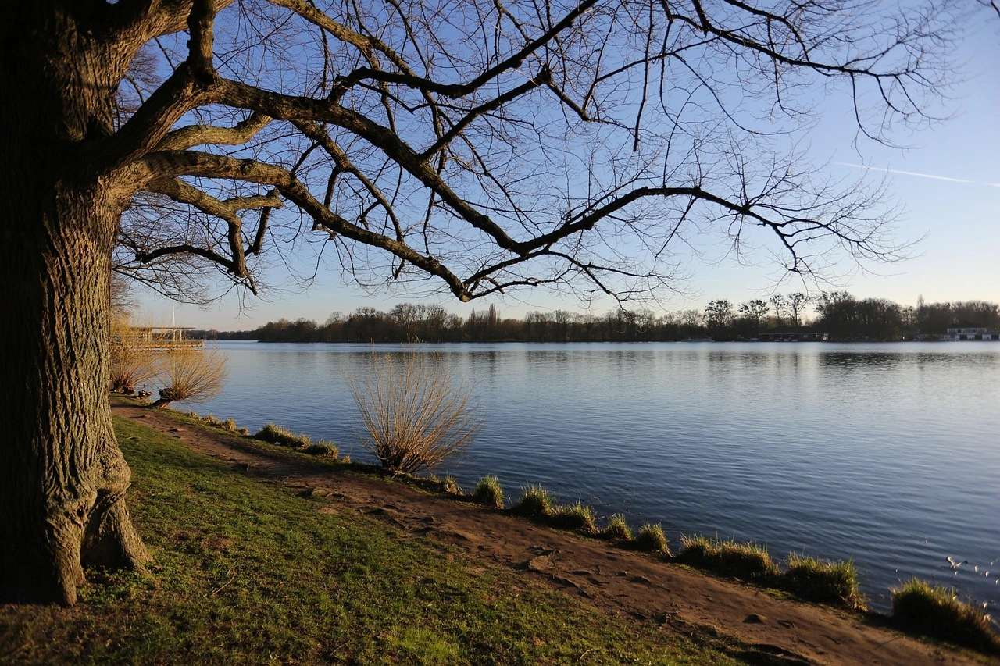
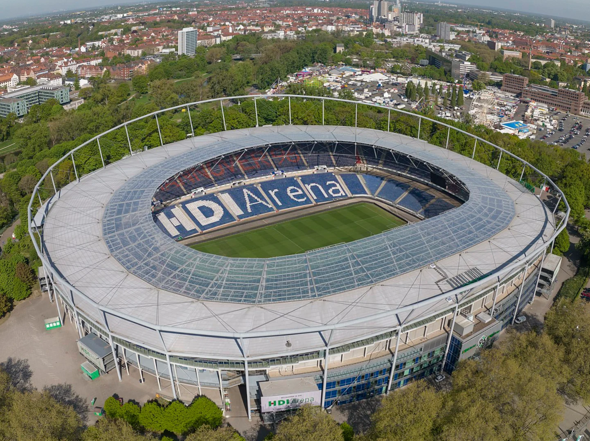

zwei frauen die ABS trainiren, Hannover
Maschsee park, Hannover
Fototour Sport – Dynamik, Bewegung und Emotion im Fokus
Sport bedeutet Bewegung, Energie und Spannung – perfekte Zutaten für eindrucksvolle Fotografie.
Auf dieser Tour bekommst du exklusiven Zugang zu ausgewählten Sportevents, Trainingsplätzen oder urbanen Spots, an denen Athletik auf Ästhetik trifft.
Ziel ist es, den richtigen Moment einzufangen
ob im Sprung, im Sprint oder in der Konzentration vor dem Start.
Termine: Wöchentlich
wechselnde Termine je nach Veranstaltung
Dauer: ca. 3–4 Stunden
Das erwartet dich:
Authentische Sportszenen, Du fotografierst reale Trainingssituationen oder Live-Events , mitten im Geschehen.
Technik trifft Timing: Lerne, wie du mit Licht, Verschlusszeit und Perspektive schnelle Bewegungen perfekt einfängst.
Vielseitige Locations: Vom Skatepark über Sporthallen bis zum Stadion
jede Tour bietet neue Herausforderungen und Motive.
Für jedes Level: Ob ambitionierter Hobbyfotograf oder Einsteiger mit Interesse an Actionshots
du bekommst Anleitung und Raum zum Experimentieren.
Kreativer Austausch: Vor Ort kannst du dich mit anderen Teilnehmern und dem Guide über Technik und Bildideen austauschen.
Hinweis: Die Touren variieren je nach Sportart und Ort – aktuelle Termine und Treffpunkte werden nach Anmeldung bekannt gegeben.
Unser Treffen
Zoom


zwei frauen die ABS trainiren, Hannover
Maschsee park, Hannover
Fototour Sport – Dynamik, Bewegung und Emotion im Fokus
Sport bedeutet Bewegung, Energie und Spannung – perfekte Zutaten für eindrucksvolle Fotografie.
Auf dieser Tour bekommst du exklusiven Zugang zu ausgewählten Sportevents,
Trainingsplätzen oder urbanen Spots, an denen Athletik auf Ästhetik trifft.
Ziel ist es, den richtigen Moment einzufangen
ob im Sprung, im Sprint oder in der Konzentration vor dem Start.
Ort: Hannover
Termine: Wöchentlich,
wechselnde Termine je nach Veranstaltung
Dauer: ca. 3–4 Stunden
Das erwartet dich:
Authentische Sportszenen, Du fotografierst reale Trainingssituationen oder Live-Events , mitten im Geschehen.
Technik trifft Timing: Lerne, wie du mit Licht, Verschlusszeit und Perspektive schnelle Bewegungen perfekt einfängst.
Vielseitige Locations: Vom Skatepark über Sporthallen bis zum Stadion
jede Tour bietet neue Herausforderungen und Motive.
Für jedes Level: Ob ambitionierter Hobbyfotograf oder Einsteiger mit Interesse an Actionshots
du bekommst Anleitung und Raum zum Experimentieren.
Kreativer Austausch: Vor Ort kannst du dich mit anderen Teilnehmern und dem Guide über Technik und Bildideen austauschen.
Hinweis: Die Touren variieren je nach Sportart und Ort – aktuelle Termine und Treffpunkte werden nach Anmeldung bekannt gegeben.
Unser Treffen
Zoom